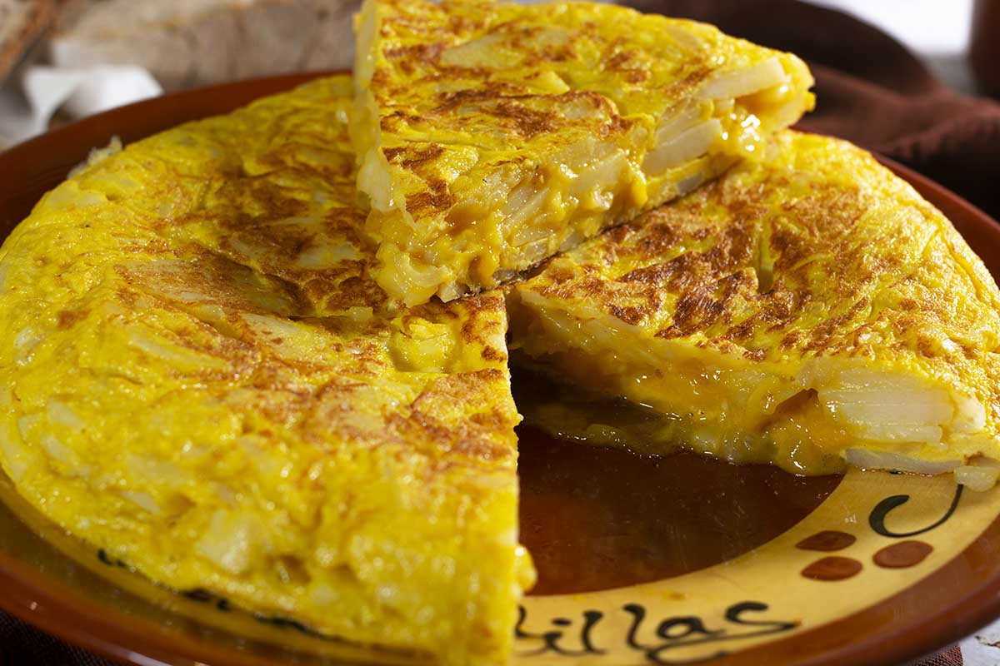

Spanish Omelet

Description
There's nothing too fancy about this rustic Spanish style omelet, just lots of hearty goodness from crispy fried potatoes and onions. Chopped tomatoes and green onions lend even more flavor and color.
Ingredients
- ½ cup olive oil
- ½ pound potatoes, thinly sliced
- salt and pepper to taste
- large onion, thinly sliced
- 4 eggs
- salt and pepper to taste
- 2 tomatoes - peeled, seeded, and coarsely chopped
- green onions, chopped
Steps
- Cook potatoes in a large frying pan
- Cook, stirring occasionally, until onions soften and begin to brown.
- Beat eggs together with salt and pepper.
- Pour eggs into pan and stir gently to combine.
- Loosen bottom of omelet with a spatula, invert a large plate over the pan, and carefully turn the omelet out onto it.
Home